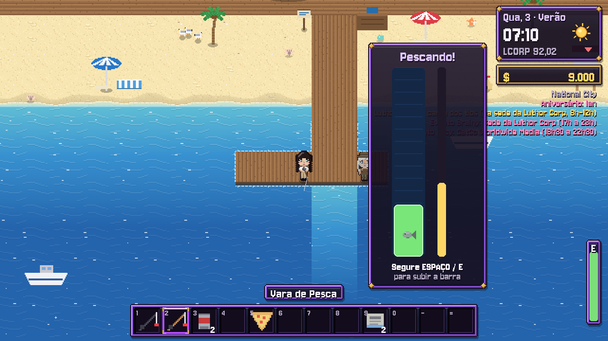
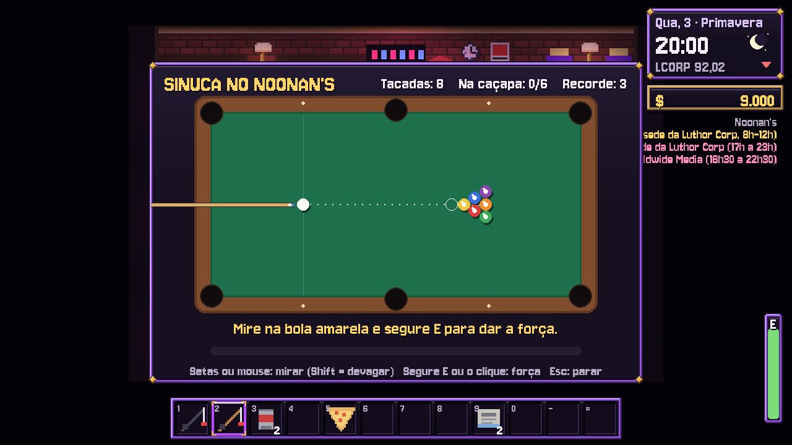
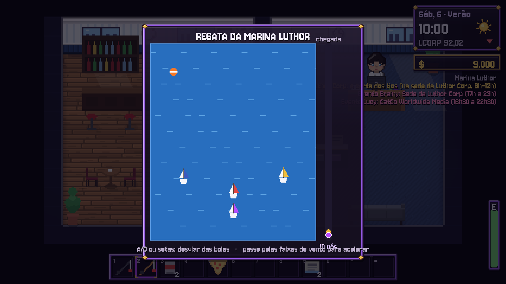
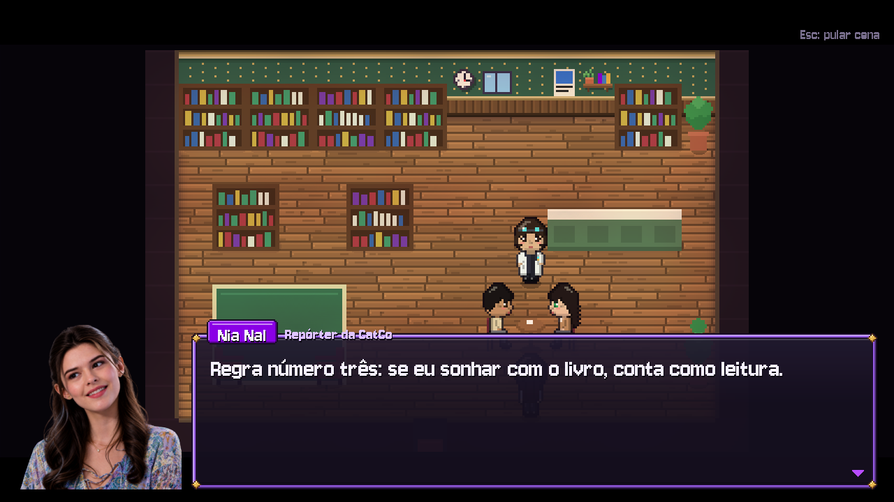
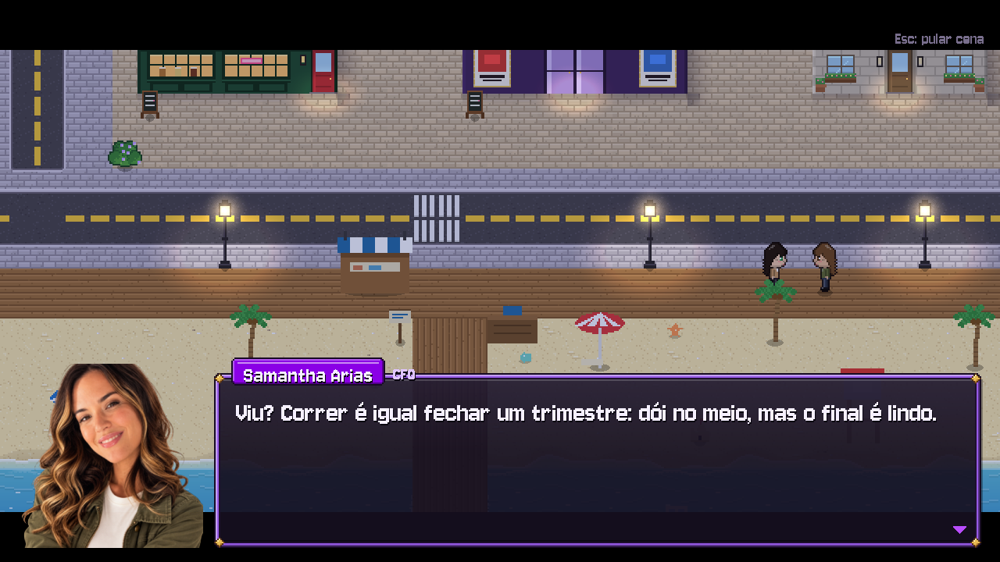
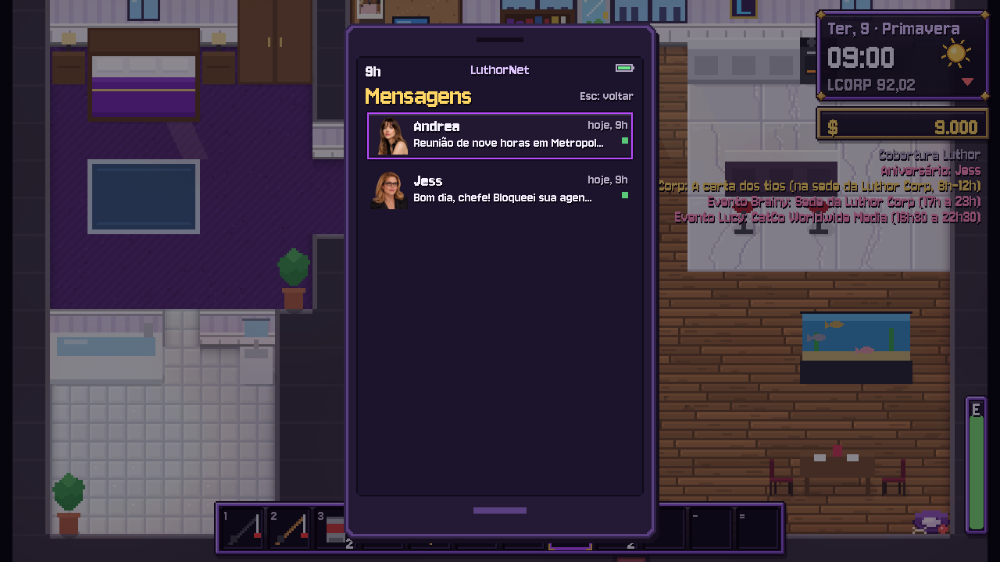
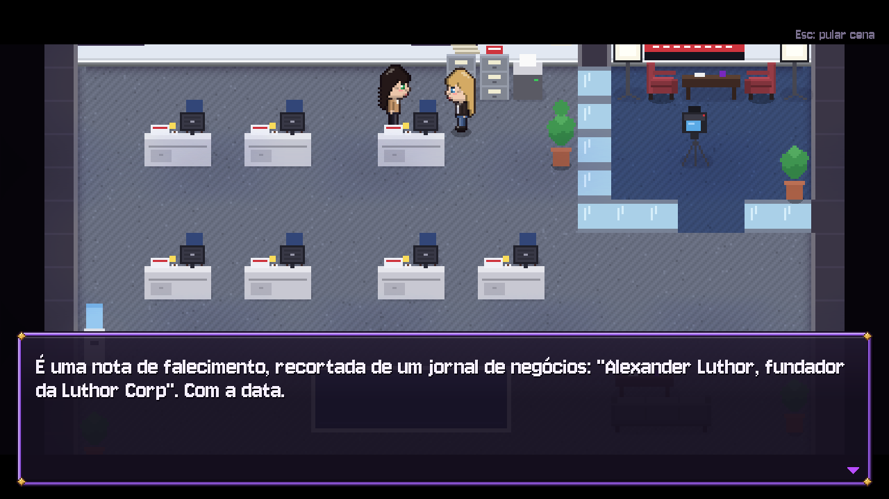
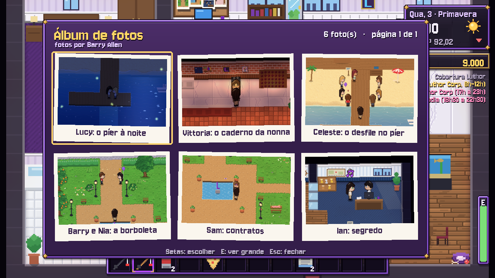
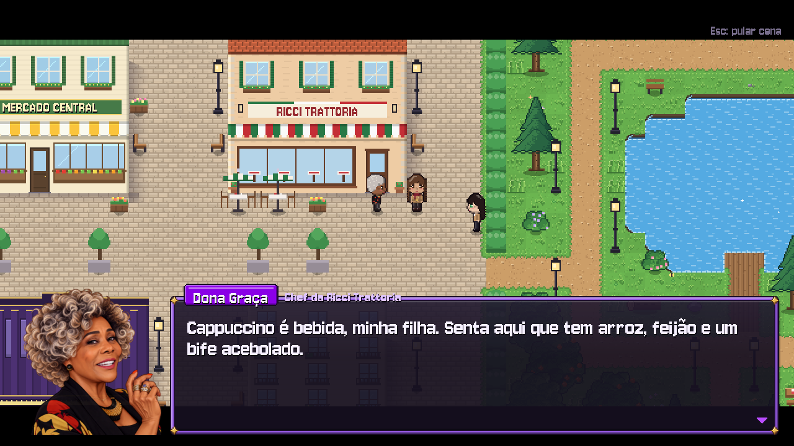
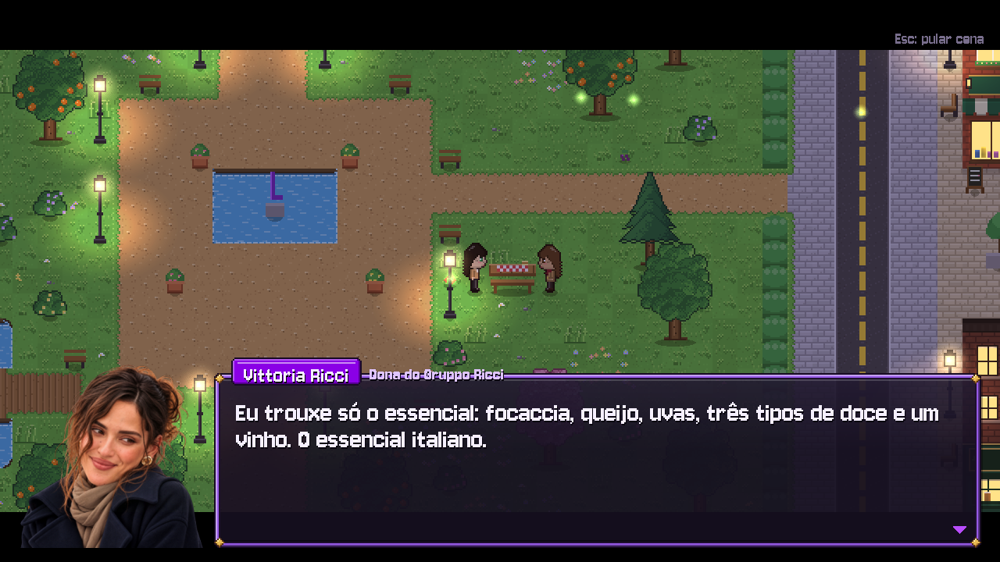

Atividades
Tudo o que dá para fazer em National City além de trabalhar.
Pesca · Cozinhar · Horta · Bichinho · Karaokê · Cinema · Fliperama, sinuca, dardos e xadrez · Marina · Clube do livro · Corrida com a Sam · Degustação de vinhos · Brinquedoteca · Quadro de pedidos · Celular · Andrea Rojas · CatCo TV e notícias · Álbum e modo foto · Decorar a cobertura · Momentos · Encontros especiais
Pesca

No píer, no lago e no alto-mar. Ver Peixes.
Cozinhar
Fogão da cobertura. Ver Receitas.
Horta
Canteiros no terraço. Ver Horta e coletáveis.
Bichinho
Adote um gato ou um cachorro e dê o nome que quiser. Ele dorme na caminha da sala, anda pela casa e deita no colo quando a Letícia senta no sofá. Petiscos deixam ele feliz.
Karaokê

No Noonan's, à noite. Aperte as setas no ritmo. Músicas: Luzes do Píer, Manchete de Primeira Página, Coração de Kryptonita, Garota de National City.
Cinema

Sessões no Cine National:
- O Último Kryptoniano (ficção científica)
- Amor em Midvale (romance)
- A Mansão da Rua Siegel (terror)
- Velozes em National City (ação)
- O Gato Detetive (animação)
- Marés de Gotham (drama)
Fliperama, sinuca, dardos e xadrez

No Noonan's: fliperama Meteoro, sinuca (6 bolas em 8 tacadas) e dardos (9 dardos). Xadrez com o Brainy, uma vez por dia, pela conversa: ele joga mais sério conforme a Letícia ganha.
Marina

Passeios de barco e regata com o Ian. Ver Marina Luthor.
Clube do livro

Quintas, das 18h às 20h, na Bayside Books (Theo com 3 corações). Dá amizade, carisma e, a cada 3 reuniões, um livro. Livros do clube:
- O Farol de Duas Luzes
- A Cozinheira de Palermo
- Engrenagens de Vidro
- Cartas para o Inverno
- O Mapa da Cidade Submersa
- A Última Sessão do Cine Aurora
- Sementes de Março
- O Xadrez do Conde
Corrida com a Sam

Terças, quintas e sábados, das 6h às 7h40, na orla (Sam com 2 corações): +40 de amizade, +20 de energia máxima no dia e +5 para sempre a cada 5 corridas (até +25).
Degustação de vinhos
Uma vez por semana com a Vittoria, na adega do Gruppo Ricci (2 corações). Ela descreve três taças e a Letícia adivinha o vinho. Vinhos: Chianti Classico, Barolo, Brunello di Montalcino, Prosecco, Amarone, Malbec, Pinot Noir, Moscato d'Asti.
Brinquedoteca
No saguão do Conti Moretti, das 9h às 19h, uma vez por dia: contar uma história (−10 de energia) ou levar um doce/pelúcia. Dá amizade com as médicas e carisma. Na 5ª visita as crianças dão um desenho.
Quadro de pedidos
No Café Grão Nobre. Bilhetes novos chegam à noite; aceite um e entregue o item conversando com quem pediu em até 3 dias. Paga dinheiro e amizade, sem castigo se não der. Começa com 1 espaço e vai a 3.
Celular

Tecla T. Apps: Mensagens (as amigas mandam mensagens e você escolhe a resposta), Agenda, Tempo, Bolsa, Fotos, Pedidos, Habilidades e Mapa.
Andrea Rojas

Andrea Rojas é amiga da Letícia e mora em Metrópolis. Manda mensagens e visita a cidade uma vez por estação (aviso na véspera): café, praia, Trattoria ou terraço. A visita rende $400 de parceria, energia, carisma e um presente.
CatCo TV e notícias

Entrevista ao vivo uma vez por semana no estúdio da CatCo, anúncio de $400 (produtos +15% por 3 noites) e o arquivo de matérias antigas. As manchetes da CatCo reagem ao que a Letícia faz: aparecem na banca, na TV e nas conversas.
Álbum e modo foto

Com 2 corações, o Barry dá um álbum: cada cena especial vira uma foto. A tecla P abre o modo foto (Enter salva). As fotos vão para o mural da cobertura.
Decorar a cobertura

Pelo computador de casa: compre e arraste móveis pela sala.
Momentos

12 cenas curtas entre duas personagens, no máximo uma por dia, quando a Letícia passa perto do lugar no horário certo. Dão +20 de amizade com as duas.
Encontros especiais

Piquenique, veleiro ao pôr do sol, cinema a dois e jantar a quatro mãos. Ver Romance.